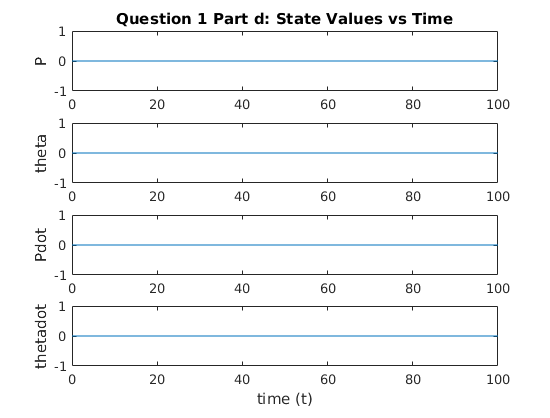

clc;
clear;
load('pendulum.mat')
disp('__________part a_______________')
B_tau_only = [0, 0;
0, 0;
0, -0.1;
0, 1.1];
if rank(ctrb(A,B_tau_only)) ~= 4
disp('not controllable using only Tau')
controllability_matrix = ctrb(A,B_tau_only)
else
ctrb(A,B_tau_only)
end
eigs = eig(A)
test_eig1 = rank([A - eigs(1,1)*eye(4) B_tau_only])
test_eig2 = rank([A - eigs(2,1)*eye(4) B_tau_only])
test_eig3 = rank([A - eigs(3,1)*eye(4) B_tau_only])
test_eig4 = rank([A - eigs(4,1)*eye(4) B_tau_only])
disp('__________part b_______________')
C1 = [1, 0, 0, 0];
C2 = [0, 1, 0, 0];
rank(obsv(A,C1))
rank(obsv(A,C2))
rank([A-eigs(1,1)*eye(4); C2])
rank([A-eigs(2,1)*eye(4); C2])
rank([A-eigs(3,1)*eye(4); C2])
rank([A-eigs(4,1)*eye(4); C2])
B = B(:,1);
C = [0, 0, 1, 0; 0, 1, 0, 0];
D = [0;0];
disp('__________part c_______________')
sys = ss(A,B,C,D);
if rank(obsv(A,C)) ~= 4,
disp('not observable')
else
rank(obsv(A,C))
end
transmission_zeros = tzero(minreal(sys))
syms s
s = 1;
G = C*inv(s*eye(4)-A)*B + D;
disp('__________part d_______________')
C = eye(4);
sys = ss(A,B,C,[0; 0; 0; 0]);
t = 0:0.01:100;
u = zeros(1,length(t));
x0 = [0, 0, 0, 0]';
[Y, T, X] = lsim(sys,u,t,x0);
figure(1)
subplot(4,1,1)
plot(T,X(:,1))
title('Question 1 Part d: State Values vs Time')
ylabel('P')
subplot(4,1,2)
plot(T,X(:,2))
ylabel('theta')
subplot(4,1,3)
plot(T,X(:,3))
ylabel('Pdot')
subplot(4,1,4)
plot(T,X(:,4))
ylabel('thetadot')
xlabel('time (t)')
__________part a_______________
not controllable using only Tau
controllability_matrix =
Columns 1 through 7
0 0 0 -0.1000 0 0.1200 0
0 0 0 1.1000 0 -0.1310 0
0 -0.1000 0 0.1200 0 -1.1251 0
0 1.1000 0 -0.1310 0 12.1264 0
Column 8
-1.1251
12.1264
1.4562
-2.8874
eigs =
0
3.2591
-3.3782
-0.0908
test_eig1 =
3
test_eig2 =
4
test_eig3 =
4
test_eig4 =
4
__________part b_______________
ans =
4
ans =
3
ans =
3
ans =
4
ans =
4
ans =
4
__________part c_______________
not observable
1 state removed.
transmission_zeros =
0×1 empty double column vector
__________part d_______________
